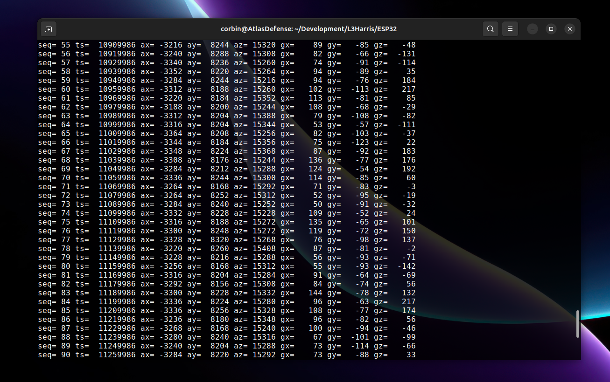
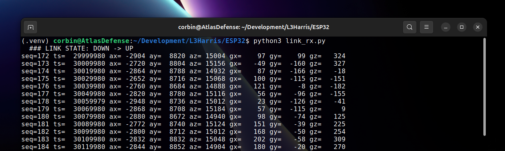
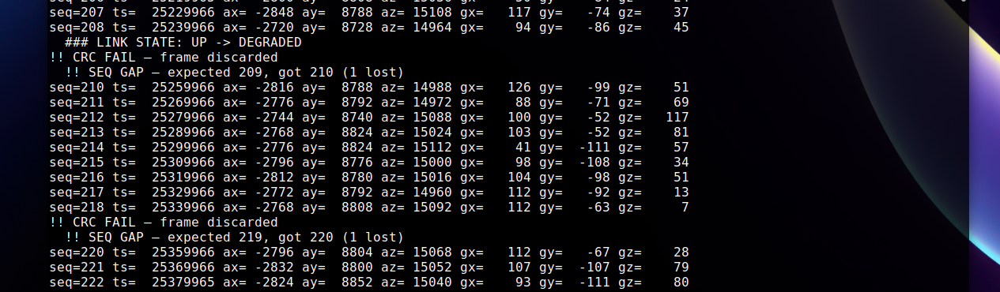
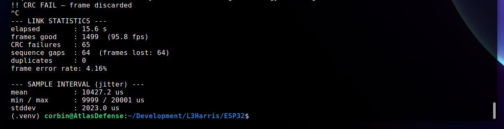
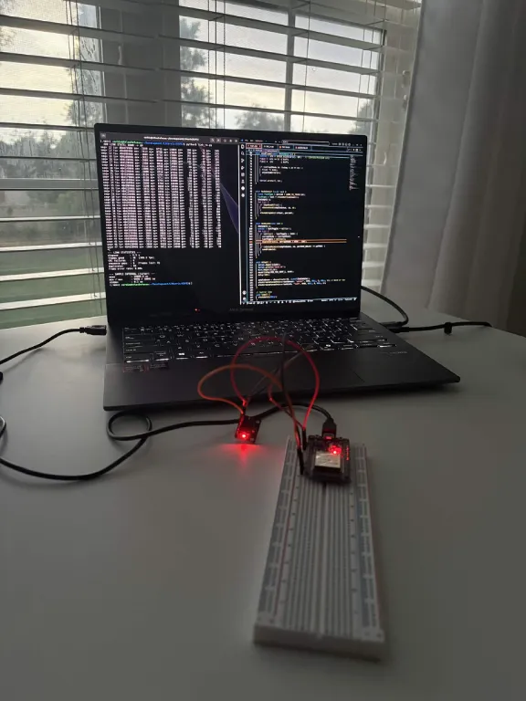
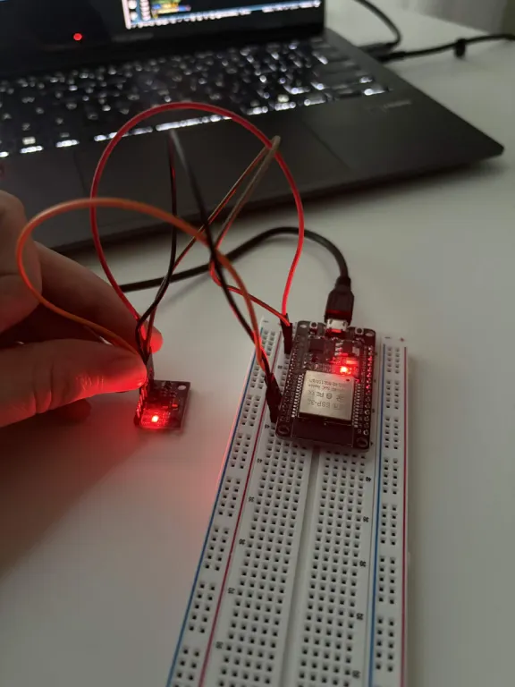

Project #1 · C++/Python · Aug 2026
ESP32 + MPU6050 Project
View on GitHubAn ESP32 samples an MPU6050 IMU over I2C at 100 Hz on a dedicated FreeRTOS task, frames each sample with a sync word, sequence number, and CRC‑16, and streams it over UART to a host receiver that re‑syncs on the byte stream, validates every frame, detects dropped and duplicate frames, tracks live link health, and reports final link statistics.
Technical Stack
- FirmwareC++ / FreeRTOS (ESP32, dual-core task split)
- Host receiverPython 3 (pyserial)
- Sensor linkI2C · MPU6050 accel/gyro/temp
- TransportUART, 115200 baud
- FramingSYNC · LEN · SEQ · PAYLOAD · CRC‑16 (24 bytes)
What It Proves
- Frame integrityFirmware deliberately corrupts 1-in-10 frames on a timer, after the CRC is already computed. The CRC-16 check must catch every one of them with zero false positives on clean frames.
- Loss detectionSequence numbers let the receiver detect dropped and duplicate frames without relying on timestamps.
- Link healthA rolling error-rate window drives a live UP / DEGRADED / DOWN link-state readout.
- Timing determinismSample interval (jitter) is measured against the 10,000 µs target using
vTaskDelayUntilfor drift-free scheduling.




Run It
- Wire the MPU6050 to the ESP32 (SDA → GPIO21, SCL → GPIO22, VCC → 3V3).
- Flash the firmware:
pio run --target upload - Install the host dependency:
pip install -r requirements.txt - Run the receiver:
python3 link_rx.py /dev/ttyUSB0 - Press Ctrl+C to print the final link statistics report.
Bench Setup

